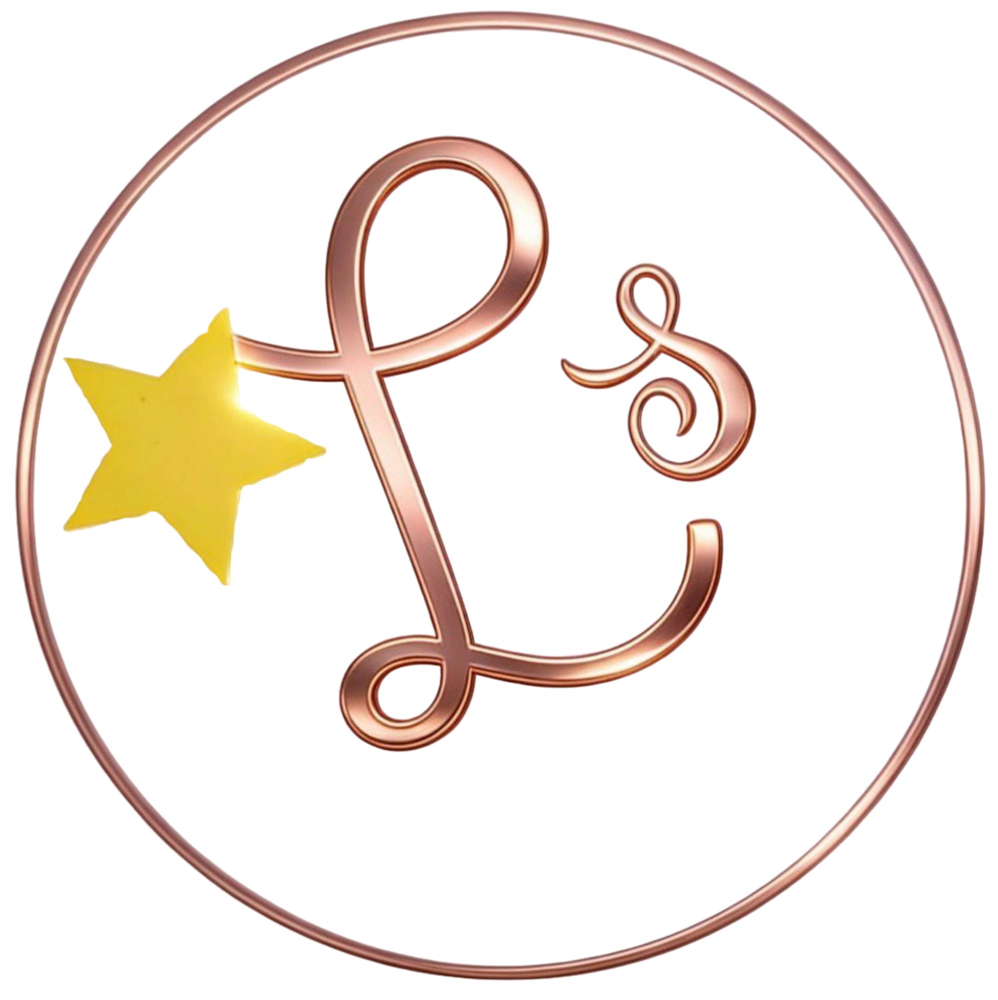

Maquillaje Artesanal
El betabel es un ingrediente muy conocido para darle un toque para el rostro gracias a su color intenso
Su color natural contiene betalaínas, pigmentos que dan un tono rosado o rojizo muy similar al rubor natural de las mejillas, no contiene quimicos agresivos, tiene antioxidantes, vitaminas A y C, higrata y protege la salud de la piel
Una alternativa casera y natural que algunas personas usan para la venta de productos profesionales ya quepor su color marron natural, no tendria quimicos dañinos el cual no se pueda usar en otras pueles, este ayuda a unificar el tono con el uso constante, disminuye la apariencia de manchas oscuras